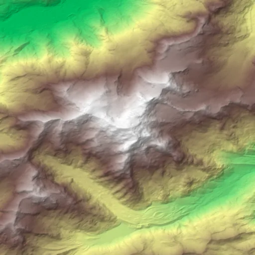

Benchmark / Near-lossless / cop-dem-glo30 / cop-dem-glo30-00
cop-dem-glo30-00
mont-blanc · 2011-01-01 · sample details

Metadata
| id | cop-dem-glo30-00 |
|---|---|
| source | Copernicus DEM GLO-30 (2021 release), AWS open data |
| asset | https://copernicus-dem-30m.s3.amazonaws.com/Copernicus_DSM_COG_10_N45_00_E006_00_DEM/Copernicus_DSM_COG_10_N45_00_E006_00_DEM.tif |
| crs | EPSG:4326 |
| transform | 6.79375 0.0002777777777777778 0.0 45.90430555555556 0.0 -0.0002777777777777778 |
| datetime_start | 2011-01-01T00:00:00Z |
| datetime_end | 2015-12-31T23:59:59Z |
| bands | elevation |
| shape | 512x512 |
| dtype | float32 |
| unit | m |
| scale | 1 |
| offset | 0 |
| input_sha256 | e25a266bf1e94832b484dbd1df65f603b5feffd59f81b4d8e7726c8347e76798 |
| site | mont-blanc |
| regime | mountain |
| lon | 6.865 |
| lat | 45.833 |
| tile | Copernicus_DSM_COG_10_N45_00_E006_00_DEM |